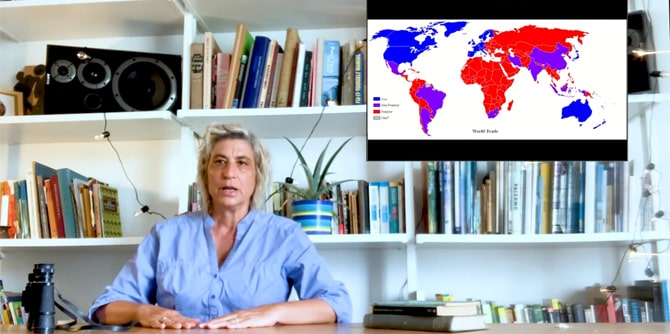

The COVID-19 crisis began as the fellows of the second cohort of the Mandel Program for Cultural Leadership in the Negev were in the midst of a process of investigating the links between society and place in the context of culture in the Negev.
As the crisis continues, with its immense uncertainty and the program's remote learning practice continuing, it is growing increasingly clear that we are in the middle of a global experiment and any attempt to properly understand these times requires perspective and processing.
The initial exhilaration from being able to “jump” from a concert in New York to a theater production in London with just a click of a mouse, has confused our understanding of “near” and “far.” This excitement eventually gave way to fatigue stemming from a massive amount of content available and the lack of time available to consume it. Despite the evident conclusion that there is a need to plot a new course, one insight is becoming increasingly clear as we delve deeper into the situation. COVID-19 has made what we already know much clearer: there is a global trend in which Western culture has taken center stage in all regions, including the margins and peripheries of the globe.
Paradoxically, it seems that the current “COVID-19 -Zoom” times – which blur distinctions between near and far, and in which geographical location has ostensibly lost its significance – offer an opportunity to explore interesting alternatives to cultural hegemony and to examine the question of how to infuse the concept of “localness” with meaning.

The program's initial study days during this period, accordingly, were an accelerated exploration of a basic question facing artists the world over: How does the impulse to act in our immediate environment and to create content with immediate relevance to the global crisis fit in with the need to recalibrate and reshape cultural discourse during times of crisis?
The first two virtual study days during the shut-down were led by Hadas Kedar, a new faculty member at the Mandel Center for Leadership in the Negev, who is running the Mandel Program for Cultural Leadership in the Negev together with Professor Dana Arieli and Dr. Itzhak (Kiki) Aharonovich.
In the background of the remote learning period is a lecture by Dr. Aharonovich lecture on planning, mapping, and space that raised questions about cultural activity as it relates to policy planning in Israel.
In the first online session, Hadas dealt with local culture and the extent to which works of art relate to their environment, through three examples of local ecological art projects that make a clear statement about sustainability and protection of nature. These included Itzhak Danziger's
Rehabilitation of the Nesher Quarry (1971) and
Bustan Khayat (The Khayat Orchard) (1977), both of which are located in nature and relate to the history of the location. The third work discussed was Avital Geva’s
Ecological Greenhouse (1977) at Kibbutz Ein Shemer, which was designed around the concept of an autarkic market found in nature and later represented Israel at the Venice Biennale in 1993. The fellows discussed the environmental contexts that Geva and Danziger’s projects highlighted via local artistic means.

In the same session, the fellows also engaged in a close examination of Project Wadi Attir as an example of a contemporary ecological project in the Negev that highlights similar aspects of the historical ecological projects presented. The Wadi Attir project, which was initiated by Dr. Muhammad Al-Nabari, ex-mayor of Hura, and architect Dr. Michael Ben-Eli, is dedicated to the collection, preservation, reconstruction, and teaching of traditional culture and ancient agricultural technologies.
The fellows then virtually met with Dr. Ofri Ilany and spoke with him about his article “The Role of the Intellectual in the Age of Extinction,” which they had read in preparation for the session. Together, they discussed the role of artists and intellectuals in light of ecological dangers (which are especially pronounced in desert regions), and explored the relationship between the coronavirus crisis and the climate crisis. Dr. Ilany raised a question concerning the difficulty encountered when trying to influence public opinion and achieve changes in lifestyles (such as cutting down on flying and driving and limiting consumption) when it comes to the climate crisis, as compared to what has taken place in response to COVID-19. The discussion concluded with the hope that the current pandemic will teach humanity that it is possible to take precautions in order to protect the delicate balance between humans and nature.
The COVID-19 period has made it even clearer to us that as cultural entrepreneurs in the Negev, we must continue to act and to create worthy alternatives to global culture, and that these alternatives are to be found within the "local-singular" characteristics of the Negev: diverse populations; creative discourse; the land; and concern for ecological balance in the natural environment – these all provide creative individuals in the Negev with material to be expressed via artistic means.
{kind=link}